、 、
译者
@QiaoXie ：
支持向量机
本章节将阐述支持向量机的核心概念
线性支持向量机分类
SVM 的基本思想能够用一些图片来解释得很好
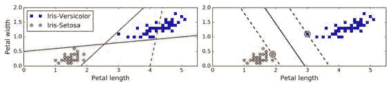
我们注意到添加更多的样本点在
警告
SVM 对特征缩放比较敏感
可以看到图 5-2 ， 左边的图中 ： 垂直的比例要更大于水平的比例 ， 所以最宽的 ， 街道 “ 接近水平 ” 但对特征缩放后 。 例如使用 Scikit-Learn 的 StandardScaler （ ） 判定边界看起来要好得多 ， 如右图 ， 。
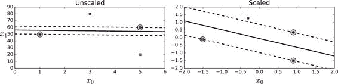
软间隔分类
如果我们严格地规定所有的数据都不在
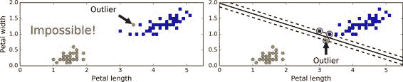
为了避免上述的问题
在 Scikit-Learn 库的 SVM 类C超参数C会导致更宽的C值C值
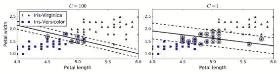
提示
如果你的 SVM 模型过拟合
你可以尝试通过减小超参数 ， C去调整。
以下的 Scikit-Learn 代码加载了内置的鸢尾花LinearSVC类C=1
import numpy as np
from sklearn import datasets
from sklearn.pipeline import Pipeline
from sklearn.preprocessing import StandardScaler
from sklearn.svm import LinearSVC
iris = datasets.load_iris()
X = iris["data"][:, (2, 3)] # petal length, petal width
y = (iris["target"] == 2).astype(np.float64) # Iris-Virginica
svm_clf = Pipeline((
("scaler", StandardScaler()),
("linear_svc", LinearSVC(C=1, loss="hinge")),
))
svm_clf.fit(X, y)
Then, as usual, you can use the model to make predictions:
>>> svm_clf.predict([[5.5, 1.7]])
array([ 1.])
注
不同于 Logistic 回归分类器
SVM 分类器不会输出每个类别的概率 ， 。
作为一种选择SVC(kernel="linear", C=1)SGDClassifier类SGDClassifier(loss="hinge", alpha=1/(m*C))LinearSVC一样快速收敛
提示
LinearSVC要使偏置项规范化首先你应该集中训练集减去它的平均数 ， 如果你使用了 。 StandardScaler那么它会自动处理 ， 此外 。 确保你设置 ， loss参数为hinge因为它不是默认值 ， 最后 。 为了得到更好的效果 ， 你需要将 ， dual参数设置为False除非特征数比样本量多 ， 我们将在本章后面讨论二元性 （ ）
非线性支持向量机分类
尽管线性 SVM 分类器在许多案例上表现得出乎意料的好x1的简单的数据集x2=(x1)^2
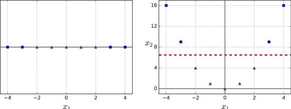
为了实施这个想法StandardScaler和LinearSVC
from sklearn.datasets import make_moons
from sklearn.pipeline import Pipeline
from sklearn.preprocessing import PolynomialFeatures
polynomial_svm_clf = Pipeline((
("poly_features", PolynomialFeatures(degree=3)),
("scaler", StandardScaler()),
("svm_clf", LinearSVC(C=10, loss="hinge"))
))
polynomial_svm_clf.fit(X, y)
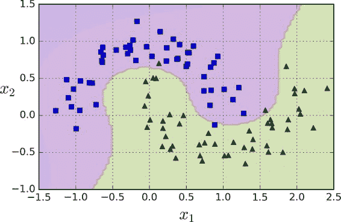
多项式核
添加多项式特征很容易实现
幸运的是
from sklearn.svm import SVC
poly_kernel_svm_clf = Pipeline((
("scaler", StandardScaler()),
("svm_clf", SVC(kernel="poly", degree=3, coef0=1, C=5))
))
poly_kernel_svm_clf.fit(X, y)
这段代码用 3 阶的多项式核训练了一个 SVM 分类器coef0控制了高阶多项式与低阶多项式对模型的影响
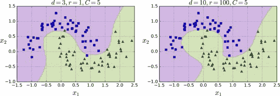
通用的方法是用网格搜索
增加相似特征
另一种解决非线性问题的方法是使用相似函数x1=-2和x1=1之间增加两个地标γ = 0.3
公式 5-1 RBF
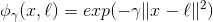
它是个从 0 到 1 的钟型函数x1=-1x2=exp(-0.3 × (1^2))≈0.74和x3=exp(-0.3 × (2^2))≈0.30
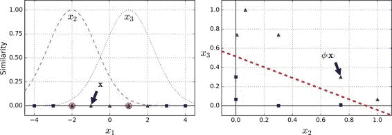
你可能想知道如何选择地标m个样本n个特征的训练集被转换成了m个实例m个特征的训练集
高斯 RBF 核
就像多项式特征法一样
rbf_kernel_svm_clf = Pipeline((
("scaler", StandardScaler()),
("svm_clf", SVC(kernel="rbf", gamma=5, C=0.001))
))
rbf_kernel_svm_clf.fit(X, y)
这个模型在图 5-9 的左下角表示gamma (γ)和C训练的模型γ使钟型曲线更窄γ值使钟型曲线更宽γ值γC相似
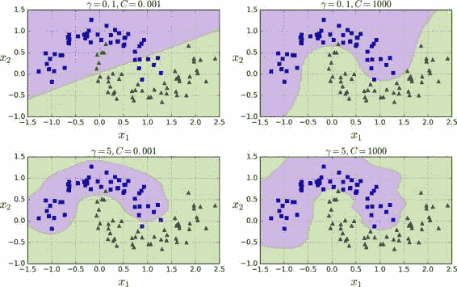
还有其他的核函数
提示
这么多可供选择的核函数
你如何决定使用哪一个 ， 一般来说 ？ 你应该先尝试线性核函数 ， 记住 （ LinearSVC比SVC(kernel="linear")要快得多） 尤其是当训练集很大或者有大量的特征的情况下 ， 如果训练集不太大 。 你也可以尝试高斯径向基核 ， Gaussian RBF Kernel （ ） 它在大多数情况下都很有效 ， 如果你有空闲的时间和计算能力 。 你还可以使用交叉验证和网格搜索来试验其他的核函数 ， 特别是有专门用于你的训练集数据结构的核函数 ， 。
计算复杂性
LinearSVC类基于liblinear库O(m × n)
如果你要非常高的精度ϵtol
SVC 类基于libsvm库于 O(m^2 × n)和O(m^3 × n)之间
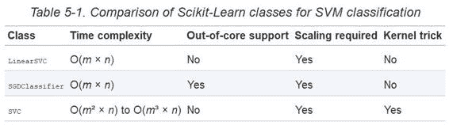
SVM 回归
正如我们之前提到的ϵ控制ϵ=1.5ϵ=0.5
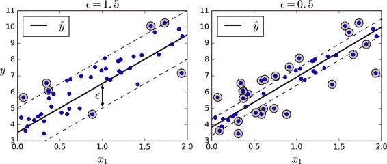
添加更多的数据样本在间隔之内并不会影响模型的预测
你可以使用 Scikit-Learn 的LinearSVR类去实现线性 SVM 回归
from sklearn.svm import LinearSVR
svm_reg = LinearSVR(epsilon=1.5)
svm_reg.fit(X, y)
处理非线性回归任务C值C值
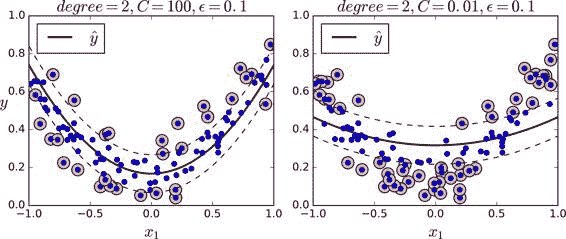
下面的代码的模型在图 5-11SVR类SVR类和SVC类是一样的LinearSVR是和LinearSVC等价LinearSVR类和训练集的大小成线性LinearSVC类SVR会变的很慢SVC类
from sklearn.svm import SVR
svm_poly_reg = SVR(kernel="poly", degree=2, C=100, epsilon=0.1)
svm_poly_reg.fit(X, y)
注
SVM 也可以用来做异常值检测
详情见 Scikit-Learn 文档 ，
背后机制
这个章节从线性 SVM 分类器开始
首先θ里θ0θ1到θn的输入特征权重x0 = 1到所有样本bw
决策函数和预测
线性 SVM 分类器通过简单地计算决策函数w · x + b = w[1] x[1] + ... + w[n] x[n] + b来预测新样本的类别ŷ是正类
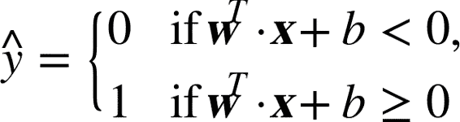
图 5-12 显示了和图 5-4 右边图模型相对应的决策函数
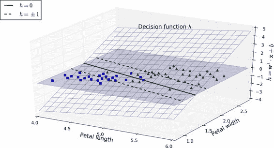
虚线表示的是那些决策函数等于 1 或 -1 的点w值和b值使得这一个间隔尽可能大
训练目标
看下决策函数的斜率||w||w越小
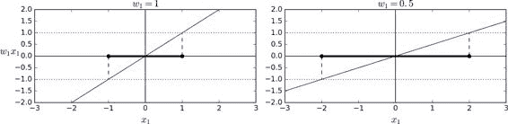
所以我们的目标是最小化||w||y^(i) = 0t^(i) = -1y^(i) = 1t^(i) = 1t^(i) (w^T x^(i) + b) > 1
因此
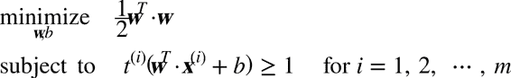
注
1/2 w^T w等于1/2 |w|^2我们最小化 ， 1/2 w^T w而不是最小化 ， |w|这会给我们相同的结果 。 因为最小化 （ w值和b值也是最小化该值一半的平方 ， ） 但是 ， 1/2 |w|^2有很好又简单的导数只有 （ w） ， |w|在w=0处是不可微的优化算法在可微函数表现得更好 。 。
为了获得软间隔的目标ζ^(i) > 0ζ^(i)表示了第i个样本允许违规间隔的程度1/2 w·w尽量小C超参数发挥作用
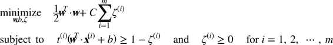
二次规划
硬间隔和软间隔都是线性约束的凸二次规划优化问题
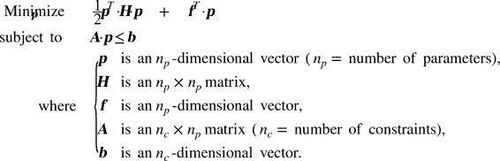
注意到表达式Ap ≤ b实际上定义了n[c]约束
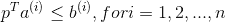
a^(i)是个包含了A的第i行元素的向量b^(i)是b的第i个元素
可以很容易地看到
n[p] = n + 1， n表示特征的数量（ ） n[c] = m， m表示训练样本数量H是n[p] * n[p]单位矩阵， （ ） f = 0， n[p]维向量b = 1， n[c]维向量a^(i) = -t^(i) x_dot^(i)， x_dot^(i)等于x^(i)带一个额外的偏置特征x_dot[0] = 1
所以训练硬间隔线性 SVM 分类器的一种方式是使用现有的 QP 解决方案p将包含偏置项b = p[0]和特征权重w[i] = p[i] (i=1,2,...m)
然而
对偶问题
给出一个约束优化问题
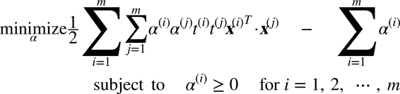
一旦你找到最小化公式的向量αw和b
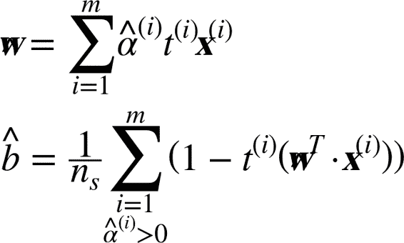
当训练样本的数量比特征数量小的时候
核化支持向量机
假设你想把一个 2 次多项式变换应用到二维空间的训练集ϕ
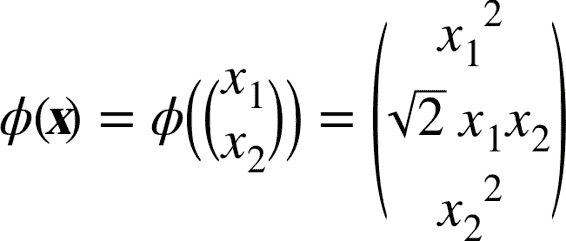
注意到转换后的向量是 3 维的而不是 2 维a和b会发生什么
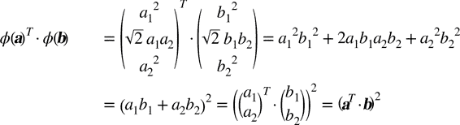
转换后向量的点积等于原始向量点积的平方φ(a)^T φ(b) = (a^T b)^2.
关键点是ϕ到所有训练样本φ(x^(i))^T φ(x^(j))ϕ像在公式 5-8 定义的 2 次多项式转换(x^(i)^T x^(j))^2
函数K(a, b) = (a^T b)^2被称为二次多项式核a和bϕ
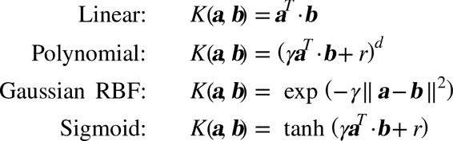
Mercer 定理
根据 Mercer 定理
如果函数 ， K(a, b)满足一些 Mercer 条件的数学条件(K函数在参数内必须是连续对称 ， 即 ， K(a, b) = K(b, a)等) ， 那么存在函数 ， ϕ将 ， a和b映射到另一个空间可能有更高的维度 （ ） 有 ， K(a, b) = ϕ(a)^T ϕ(b)所以你可以用 。 K作为核函数即使你不知道 ， ϕ是什么使用高斯核 。 Gaussian RBF kernel （ 情况下 ） 它实际是将每个训练样本映射到无限维空间 ， 所以你不需要知道是怎么执行映射的也是一件好事 ， 。 注意一些常用核函数
例如 Sigmoid 核函数 （ 并不满足所有的 Mercer 条件 ） 然而在实践中通常表现得很好 ， 。
我们还有一个问题要解决φ(x^(i))w必须和φ(x^(i))有同样的维度w的情况下做出预测w代入到新的样本x^(n)的决策函数中
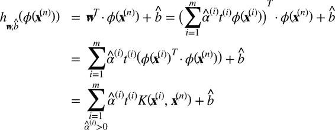
注意到支持向量才满足α(i)≠0x^(n)的点积b
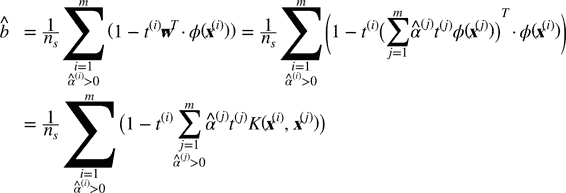
如果你开始感到头痛
在线支持向量机
在结束这一章之前SGDClassifire
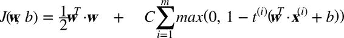
代价函数第一个和会使模型有一个小的权重向量w
Hinge 损失
函数
max(0, 1–t)被称为 Hinge 损失函数如下 （ ） 当 。 t≥1时Hinge 值为 0 ， 如果 。 t<1,它的导数斜率 （ 为 -1 ） 若 ， t>1则等于 0 ， 在 。 t=1处它是不可微的 ， 但就像套索回归 ， Lasso Regression （ ） 参见 130 页套索回归 （ 一样 ） 你仍然可以在 ， t=0时使用梯度下降法即 -1 到 0 之间任何值 （ ） 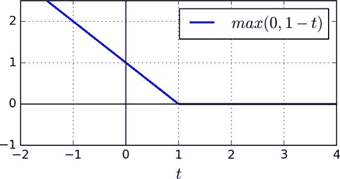
我们也可以实现在线核化的 SVM
练习
-
支持向量机背后的基本思想是什么
-
什么是支持向量
-
当使用 SVM 时
， ？ -
分类一个样本时
， ？ ？ -
在一个有数百万训练样本和数百特征的训练集上
， ？ -
假设你用 RBF 核来训练一个 SVM 分类器
， ： γ吗？ C呢？ -
使用现有的 QP 解决方案
， （ H， f， A， b） ？ -
在一个线性可分的数据集训练一个
LinearSVC， SVC和SGDClassifier， 。 -
在 MNIST 数据集上训练一个 SVM 分类器
。 ， （ ） 。 ， 。 ？ -
在加利福尼亚住宅
（ ）
这些练习的答案在附录 A